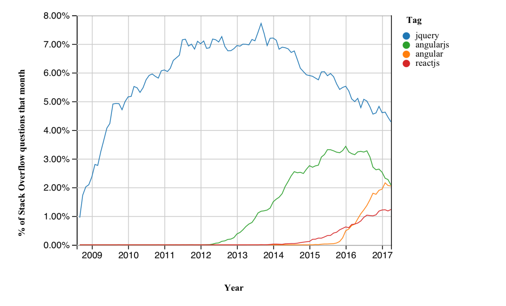

JavaScript North West Meetup


jQuery
For a surprising number of developers jQuery == Javascript
(They're wrong)
How jQuery became the biggest framework.
Why it isn't best practice in 2017.
What is?
Trends
2006
When jQuery launced the web was a very different place.
Browsers
IE6 was king, with something like 60% market share.
Older versions of IE were common, something like 25% of all visitors.
Firefox had 9-10%.
Safari (and all the other browsers) were the remaining <5%.
Chrome wouldn't be released until 2008.
Browser Compatibility
Each of the browsers had different:
- DOM selection and creation methods.
- Ways of subscribing to events.
- Implementations of
XMLHttpRequest. - Loads of quirks and proprietary features (like DHTML Behaviors).
Just how bad was it?
For example IE4, 5 & 6 had a bug:
Elements added to a document fragment would memory leak.
All DOM manipulation had to be done top down.
Get this wrong and IE would use more and more memory until it crashed.
Mobile
WAP phones common.
Majority of smart phones were Blackberry (remember them?) or Symbian.
iPhone wouldn't arrive until 2007.
Either don't bother or separate minimal site.
Server
Servers were mostly Java, ASP 'Classic', .NET WebForms, PHP, or even CGI C/Perl scripts.
HTML content built server side.
JS typically added inline.
REST was about, but SOAP was far more common.
Typical Page in 2006
<%-- Typical asp/aspx page --%>
<%=content%>
Click Me!
Using <div> instead of any built-in control was the
standard behaviour (and a pet hate of mine).
Rise of jQuery
In this landscape jQuery made a huge difference.
DOM Manipulation
Get element from DOM: $('CSS selector')
Create DOM fragment from HTML: $('<tag>content</tag>')
The Sizzle engine made this quick, even on IE.
Events
Subscription: element.on('click', function() {...})
Cancellation: element.off('click')
Fire once: element.one('click', function() {...})
Event tidy up - avoid memory leaks.
HTTP Requests
ActiveXObject('Microsoft.XMLHTTP') vs
new ActiveXObject('MSXML2.XMLHTTP') vs
XMLHttpRequest
$.ajax added a consistent method with request-type handling.
Ready Event
$(function(){
// Put your initialisation code in here
// and it can hook up anything in the page.
});You never had to worry whether an element was loaded into the DOM yet.
Consistent
Web front end developers could learn jQuery and just get on with developing instead of faffing about with bloody IE awfulness.
Components and plug-ins could depend on jQuery and be sure of it working in every browser.
Soon there was an ecosystem of jQuery components.
jQuery was Awesome
Fall of jQuery
Today, in 2017, there are very few new projects where jQuery is well suited.
The Landscape has Changed
Standards have improved.
Mobile more important.
Client side rendering.
New technologies.
jQuery Cannot Change
Too many components depend on the existing behaviour.
There's no path from jQuery's replace-everything approach to a more modern shim what's missing style.
Let's look at what jQuery does, and see what could be done better...
DOM Manipulation
One of jQuery's strengths was consistent easy DOM manipulation.
Element Selection
Most browsers now have native support for getting elements by CSS3 selectors:
// Simple $ selector
function $(selector, context) {
// We have a selector, optionally apply the context
var result = (context || document).querySelectorAll(selector);
// If one element return it instead of the collection
return result || result.length === 1 ? result[0] : result;
}
var element = $('selector');(works in current browsers, except IE8)
jQuery Wrapper
$('selector') returns a wrapper object with helper methods.
// Mash of DOM elements, NodeList and jQuery collections
$('selector').click(function() {
// Turn DOM element we're acting on into a jQuery wrapper
var $this = $(this);
// Get the DOM element from the jQuery collection
var domEle = $something[0];
});Convention: prefix jQuery variables with $
Add components to the jQuery prototype: $('selector').myComponent()
Why Wrap HTMLElement?
Why didn't jQuery just extend all the DOM elements and avoid all this?
This would leak in IE.
jQuery coding style: chaining.
DOM Creation
Easy to create DOM fragments: $('<span>content</span>')
// Add to our $ implementation
function $(selector, context) {
if(selector.indexOf('<') === 0) {
// We'be been passed an HTML string, parse it as DOM content
var outer = document.createElement('div');
outer.innerHTML = selector;
return outer.children.length === 1 ?
outer.children[0] : outer.children;
}
// See selector code above...Why is this bad?
Setting innerHTML is slow - expect jank.
// Slow, extra <div> element created and discarded
var outer = document.createElement('div');
outer.innerHTML = 'content';
return outer.children[0];
// Faster, less memory needed
var ele = document.createElement('span');
ele.appendChild(document.createTextNode('content'));
return ele;This isn't as nice code though...
Aside: A Better Way to Create Elements
How could we create HTML Elements faster, cleaner and with more concise code?
Idea: JS that looks like HTML
If we're going to mix HTML and JS why not have JS functions to create elements?
// Factory function to create any <tag>
function createElement(tag, content) {
var ele = document.createElement(tag);
if(content)
ele.appendChild(document.createTextNode(content));
return ele;
}
// Then helper methods for different tags
function div(content) { return createElement('div', content); }
function span(content) { return createElement('span', content); }
// ... etc
var newSpan = $('content');
// becomes
var newSpan = span('content');Looking a little better, but we can do more...
Add Attributes and Children
We also need to be able to set attributes and add children.
// Add attributes
function createElement(tag, content, children) {
// ... create ele then add attributes with setAttribute
for (var attr in ele)
if (content[attr]) {
ele.setAttribute(attr, content[attr]);
delete content[attr];
}
// Set everything else as properties
for (var prop in content)
ele[prop] = content[prop];
for (var i = 0; i < children.length; i++)
ele.appendChild(children[i]);
}See for this with support for strings and style properties too.
Better DOM Example
// JS ends up looking a lot like HTML
var divElement =
div({ style: 'background-color:grey;', extra: true }, [
div('panel 1'),
div({ text: 'panel 2' }),
div({ style: 'background-color:grey;' },
span({ style: 'color:blue;' }, 'panel 3'))
]);Nice! But... maybe this should be data driven.
Could we parse HTML into data, then apply our factory?
JSX
Yes, yes we can, but someone has already done it.
This is (extremely simplified here) what JSX does:
// JSX is HTML-like in JS
<div style={{backgroundColor: '#f00'}}>content</div>;
// Pre-compiles to factory method calls
React.createElement('div', {style: {backgroundColor: '#f00'}}, 'content');React?
React
React is a far more complete implementation of this idea.
DOM as data can be compared and only differences applied.
This abstraction is called the virtual DOM.
See also Preact for more lightweight alternative with fewer features.
Web Components
Vue.js uses a similar model, but uses the slots API.
Web Components build DOM with <template> and Shadow DOM.
(more on these later...)
jQuery DOM
There are better ways to select and build DOM.
jQuery includes a lot of DOM manipulation code, but it standardises and wraps rather than abstracts.
Events
jQuery makes adding an event to existing page content easy.
Event Standards
jQuery hid browser quirks with easy to use code:
// Get the element and subscribe event
$('selector').on('event', handler);It's now easy in all current browsers:
// Get the element and subscribe event
document.querySelector('selector').addEventListener('event', handler);(Except IE8, but let's just punish those users with an extra JS shim to download rather than make everyone go through the wrapper.)
Event Features
Events have continued to evolve with modern browsers:
Passive events avoid dropped frames while the browser waits for event cancellation that never happens.
// In handler preventDefault() will be ignored
element.addEventListener('event', handler, { passive: true });Native support for single use events.
// Single use event that only fires once in Chrome/FX
element.addEventListener('event', handler, { once: true });
// Though it's not too hard to do this in IE
element.addEventListener('event', function handler(event) {
// Remove the event listener
event.currentTarget.removeEventListener(event.type, handler);
});Garbage Collection & Events
GC in JS varies by engine, but it involves looking through objects in memory and discarding anything that isn't referenced anymore.
This can be a problem with events, as they can 'hold on' to variables and DOM objects.
jQuery automatically tidies up events when you remove a DOM element.
Without it, you have to be careful to call element.removeEventListener('event', handler) yourself.
DOM & then Events
jQuery's combination of event helpers and DOM creation suits a two step process:
// 1) Create HTML content
var element = $('content');
// 2) Find the element added and subscribe to the click event
$('#but', element).on('click', function() {
alert('Please do not push this button again!');
});This isn't the only way in jQuery, but it's by far the most common and easiest pattern.
Events with DOM
If we build DOM directly we can add events directly too:
// 1) Create DOM content
var outer = document.createElement('span');
outer.appendChild(document.createTextNode('content'));
var button = document.createElement('button');
button.appendChild(document.createTextNode('Click Me!'));
outer.appendChild(button);
// 2) Subscribe to the click event directly against the DOM element
button.addEventListener('click', function() {
alert('Please do not push this button again!');
});Quicker, but ugly...
Events with 'Better' DOM
We can add events directly to our simple DOM builder.
// Create virtual DOM
var outer =
span('content',
button({click: function() {
alert('Please do not push this button again!');
}}, 'Click Me!'));Nice. What about JSX/React?
// JSX syntax
var outer =
<span>content
<button onClick={function() {
alert('Please do not push this button again!');
}}>Click Me!</button>
</span>;
jQuery Events
jQuery events are tidy and good for GC.
But they do not support recent features.
They add the most value to disconnected HTML and events.
HTTP Requests
jQuery has $.ajax for consistent HTTP requests,
and helpful shorthand like $('selector').load('url').
fetch API
Stream and large response handling.
Available to workers.
Native promise support.
Supported by everyone except IE - it's easier to shim fetch for IE users than it is to make everyone use a wrapper API.
jQuery AJAX
jQuery AJAX is OK.
But there is a better option out there for modern browsers.
Ready Event
For most of jQuery's life this has been awesome, but now it could be the greatest weakness.
Ready Replacement
// Handle the document ready event
function $(selector, context) {
// If passed a function
if(typeof selector === 'function')
{
if(document.readyState === 'complete')
// DOM content already loaded, fire once
// the current script block has finished
window.setTimeout(selector);
else
// Listen for the content loaded event
document.addEventListener('DOMContentLoaded', selector,
{ once: true });
return;
} // ...It's fairly easy to duplicate jQuery's behaviour (though this is simplified).
So what's wrong with Ready?
No support for <script async ...>
No support for <script defer ...>
Every jQuery component relies on ready, so...
Everything waits for all the JS to download before becoming interactive.
This is fine for corporate apps where people will wait, but is a problem for mobile.
What could be done better?
jQuery simplifies something that just isn't simple.
Components and pages have a lifecycle
Interactivity should be progressive, not all on ready.
It should be possible to defer or asynchronously load components.
Mobile
Mobile devices are a whole new battleground.
Mobile is sloooooww
Slower connections.
Higher latency.
More work means more heat and less battery.
Phones are slower than you think.
How much slower?
The fastest phones on the market are 10 times slower than the average desktop, running flat out and burning through their battery.
The average phone is far slower.
200ms parsing and executing jQuery becomes 2 seconds of waiting with an uninteractive page.
20ms of overhead on a click event becomes 200ms of lag where the user will tap the button again.
Run as little JS as possible!
No code is faster than code you don't even have to load.
jQuery's replace-everything strategy is just not a good fit here.
Other rules for mobile optimisation
Execute all scripts asynchronously (jQuery's ready event blocks this).
Don't block rendering waiting for resources to load or JS to run (broken by many jQuery components).
Only use GPU accelerated animations (no .slideUp()/.slideDown(), amongst many others)
Only load the script you'll need.
jQuery Mobile
jQuery does have a mobile touch-optimised version.
It's 196KB (un-compressed) on top of jQuery (another 86KB) and has to finish loading before anything will work.
I refer you back to the golden rule.
While jQuery has always claimed to be lightweight, in the mobile context it really really isn't.
Paradigm Shift
The biggest issue with jQuery is that it's so well optimised for a previous paradigm.
2005: server builds HTML with inlined JS events.
Mobile was an afterthought.
2010: static HTML with events subscribed to in separate client side code.
jQuery is well suited for this pattern.
Mobile was all about native app development.
2017: REST services with either client side rendering or rehydration, maybe web components, all of which build the DOM and hook up events as they go.
Best practice with most projects is now mobile-first.
Client-side Render
If you render HTML in JS then you optimise building components.
Frameworks that parse pre-built HTML add a lot less value.
HTTP/2
HTTP/2 makes it much quicker for browsers to download multiple files at once.
This has the potential to further change the paradigm...
The Next Paradigm
(Entirely my opinions.)Single page app loads with tiny, heavily optimised, core library.
Shims loaded as needed - Chrome users will get none, while IE users will have to wait longer.
Resources and shims will be small files loaded in parallel over HTTP/2.
Preload and HTTP/2 push will send down resources before they are requested.
Service workers will cache resources and provide offline functionality.
Aside: Coding 'Best Practice'
Weirdly, this meta has come full circle as rendering has moved from server to client.
2005
<%-- Typical asp/aspx page --%>
<%=dynamicContent%>
Mix of server and client code.
Hard to support complex actions.
Hard to change DOM.
Messy to package into components.
2010: jQuery to the rescue!
@* Typical dynamic razor page, but could be anything *@
@dynamicContent
// Static hook-up-page.js
$(function(){
// Once the has loaded set up the click event
var $clickableButton = $('#clickableButton').click(function(e){
// This will be a DOM element, we need $this to get the data-attr
var $this = $(this);
alert($this.data('message'));
});
});
2017: JSX/React
// JSX inlines the functionality
const element = (
<div>
{dynamicContent}
<button onClick={function() { alert(message); }}
className="btn">
Click Me!
</button>
</div>);
2017: Angular
@Component({
selector: 'my-component',
template: `
{{dynamicContent}}
`})
export class MyComponent {
get dynamicContent() { ... }
alertMessage() { alert(this.message); }
}2017: Vue JS
Vue.component(
'my-component',
{
template: `
{{dynamicContent}}
`,
props: ['message', 'dynamicContent'],
methods: {
alertMessage: function () { alert(this.message); }
}
});2017: Polymer
{{dynamicContent}}
2017
Many frameworks now...
Use an ES6 class as the component.
Include HTML templates or use the new <template> tag.
Build components that can be included in HTML: <my-component></my-component>.
Have {{model-binding}} of some kind.
Work both on server and in browser.
Replacing jQuery
There are alternatives
Our simple jQuery
Source (<1KB).
Others have done it better...
jQuery Drop-in Replacements
jQuery is 86KB
Zepto 26KB.
jqlite 20KB, used by Angular JS
(Angular 2/4 has dropped it)
Alternatives
There's lots of help online to wean off jQuery...
Loads more!
Recruitment & Skills
There are a lot of JS developers who reach for jQuery for every project.
That can be both a good and a bad thing.
Team Management
jQuery is ubiqutous, mature, and easy to learn.
For all of the exciting new frameworks listed above one of the top Stack Overflow questions is...
How do I use {framework} with jQuery?
jQuery developers are cheaper and easier to source than, say, React or Angular specialists.
If you need to build a large team and you're dealing with corporate or internal customers then jQuery is a pragmatic choice.
Skills
jQuery is generic, old, and easy to learn.
If you're coding with jQuery try using it less. Plain JS is perfectly compatible.
jQuery should be just one of a set of JS skills that you have.
You should be as comfortable coding vanilla JS with no libraries loaded at all as you are with jQuery.
Conclusion
jQuery has a place in history
jQuery is a decade old paradigm and the goalposts have moved
The future is something else
Conclusion
jQuery has a place in history.
jQuery is a decade old paradigm and the goalposts have moved.
The future is something else.